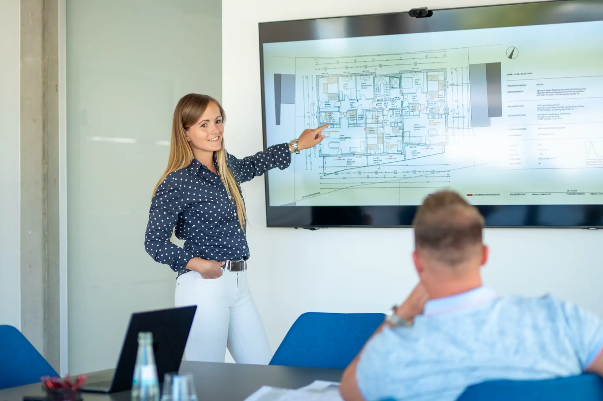

01 · Arbeitsweise
Persönlich. Direkt. Verlässlich.
Eine gute Zusammenarbeit beginnt für mich mit offener Kommunikation, gegenseitigem Vertrauen und klaren Absprachen. Deshalb lege ich großen Wert auf eine persönliche Betreuung und kurze Entscheidungswege.
Als Inhaberin meines Büros begleite ich die Projekte selbst und bleibe über den gesamten Planungsprozess hinweg die zentrale Ansprechpartnerin. So laufen Informationen direkt zusammen, Abstimmungen bleiben unkompliziert und Entscheidungen können effizient vorbereitet werden.
Je nach Projektumfang arbeite ich mit einem eingespielten Netzwerk aus freiberuflichen Mitarbeitern, Fachplanern und weiteren Projektbeteiligten zusammen. So lassen sich auch größere Vorhaben flexibel und zuverlässig bearbeiten, ohne auf die Vorteile einer persönlichen Betreuung verzichten zu müssen.